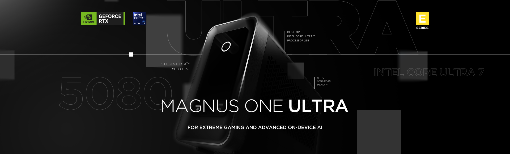
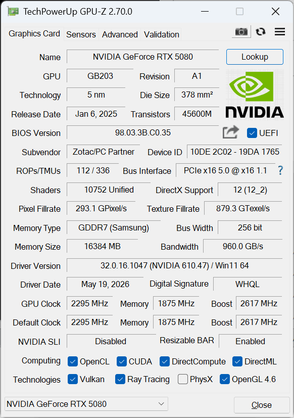
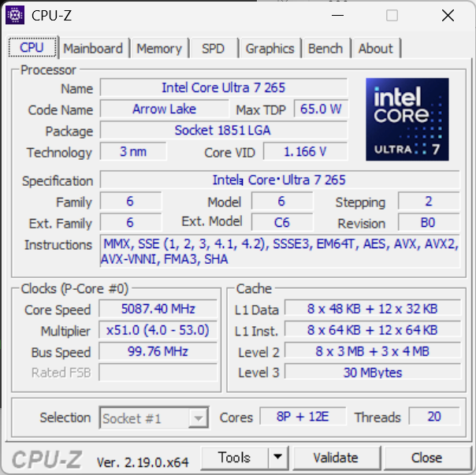
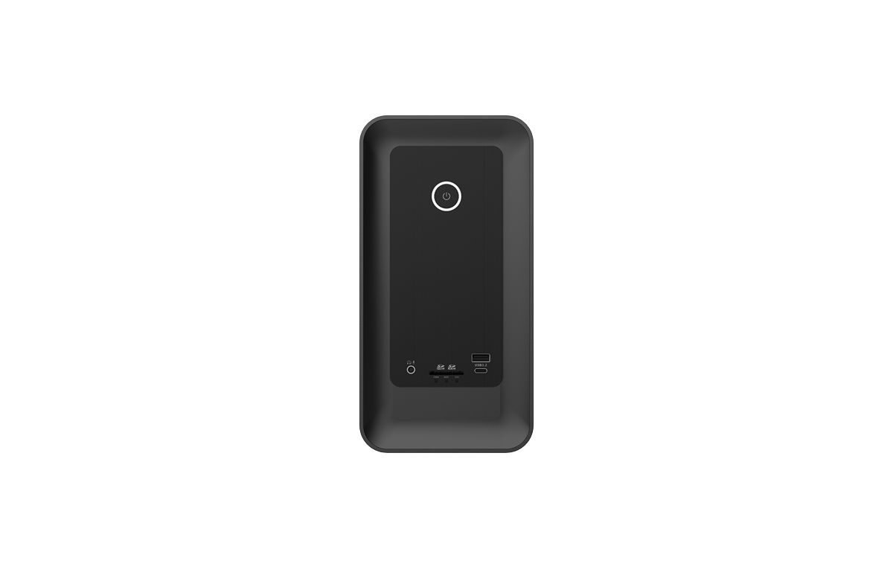
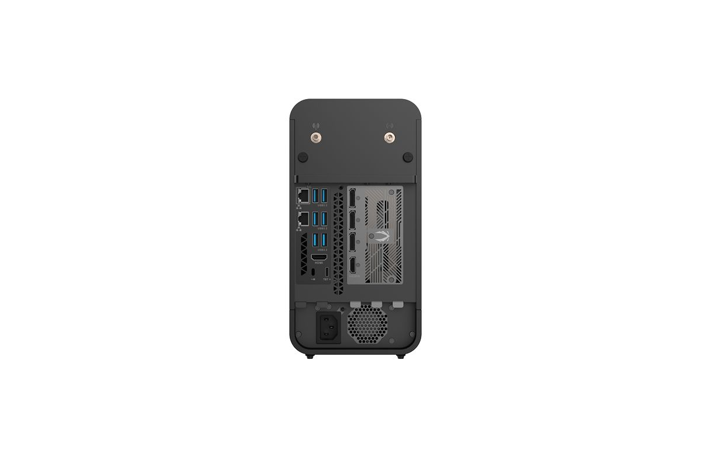
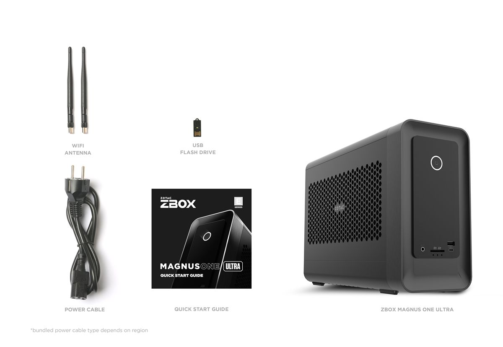

ZBOX MAGNUS ONE ULTRA EU275080CRTX 5080 16GB × 20コア Core Ultra 7、11.46L の実力
デスクトップ版 GeForce RTX 5080 16GB と Core Ultra 7 265（20コア）を、850W 電源を内蔵した 11.46L の筐体に収めたミニPC「ZBOX MAGNUS ONE ULTRA EU275080C」。 3DMarkによるグラフィックス性能、GPUレンダリング、AI画像生成、CPU性能、写真編集まで、社内計測のベンチマークから 同じ MAGNUS 系の RTX 5070 Ti・RTX 5070・RTX 5060 Ti に対する位置づけ、16GB VRAM が効く場面、そして 大きめの筐体がもたらす冷却の余裕を、用途選定の参考となるよう中立に読み解きます。

実測サマリー（3行）
- 3DMark（グラフィックス性能）・GPUレンダリング・AI のすべてで 比較した ZBOX MAGNUS 系7機のトップ（Time Spy Extreme 14,859 / Speed Way 8,989 / Steel Nomad 8,588、Blender OptiX 9,329）。3DMark・GPUレンダリングでは RTX 5070 Ti に対して +15〜30%、RTX 5060 Ti に対して +78〜137%。AI（ComfyUI SDXL）は生成時間で 5070 Ti 比 15〜18%・5060 Ti 比 50〜53% 短縮。
- ComfyUI SDXL 6.04 秒/枚は RTX 5060 Ti（12.08 秒/枚）のちょうど半分の生成時間。VRAM は 16GB で、Hires.Fix 連続生成時の実測ピークは 13.2GB＝容量に余裕を残します。
- 最大負荷でも GPU 69/73°C・ファン 48〜51%。同じ ZOTAC 設計の 8.48L 機（RTX 5070 / 81/84°C・ファン 91%）に対し、約1.3倍の電力を投入しながら 12°C 低く、ファン回転はおよそ半分。テスト構成: メモリ32GB・電源プラン＝高パフォーマンス。
MAGNUS ONE の上に立つ「ULTRA」— 奥行きを伸ばして RTX 5080 と 850W 電源を収める
ZBOX MAGNUS ONE ULTRA EU275080C は、ZOTAC のミニPC「ZBOX MAGNUS」シリーズの最上位にあたるモデルで、GeForce RTX 5080 16GB（Blackwell 世代 / DLSS 4.5）と Intel Core Ultra 7 265（20コア）を組み合わせています。 PCIe 5.0 x16 のデスクトップGPUカードに、ソケット式のデスクトップCPU（Socket 1851 LGA）を組み合わせた Intel デスクトップ構成です。
名前が似ている MAGNUS ONE（EU275070C など）とは別シリーズの別筐体です。幅126mm・高さ249mm は共通ですが、奥行きが 270.5mm から 365.5mm へ伸び、容積は 8.48L から 11.46L に、内蔵電源は 500W から 850W になりました（本体重量 6.35kg）。最大 360W・2.5スロット・全長 303.5mm までのGPUを収める枠が確保されており、RTX 5080 クラスを積むための拡張が、そのまま冷却と電源の余裕にもなっています（実測は §08）。
本機はベアボーン構成で、メモリ・ストレージは導入側で選定・増設できます（本レビューのテスト機は 32GB DDR5-5600 ＋ 1TB NVMe SSD）。 CPU はソケット式、GPU は PCIe カードというデスクトップと同じ実装ですが、ユーザーによる CPU・GPU の交換は公式にはサポート・保証の対象外です。導入時の構成選定と、メモリ・ストレージの増設が実務上の可変部分になります。 デスクトップ版 GeForce RTX 5080 を搭載するミニPCとしては世界最小クラス（2026年7月時点・ZOTAC 調べ）で、一般的なミニPC（NUC型など）より大きいものの、単体GPUを積めるミニPCの最上位クラスにあたります。
GPUGeForce RTX 5080 とは
NVIDIA の Blackwell 世代（RTX 50 シリーズ）の上位デスクトップGPU。本機の搭載モデルは VRAM 16GB（GDDR7 / 256-bit）。前世代から、より高速な GDDR7 メモリ、フレーム生成を強化した DLSS 4.5、新世代のレイトレ／AI（Tensor）ユニットへ更新された世代です。
ポイントゲームに加えてローカルでのAI画像生成・推論の需要が広がり、描画性能と VRAM容量（扱えるモデル規模・解像度）の両方が重視されるようになっています。RTX 5080 は、4K 描画・GPUレンダ・ローカルAIをまとめてこなせるハイエンド帯のGPUです。
CPUCore Ultra 7 265 とは
Intel の Core Ultra シリーズ2（Arrow Lake）世代のデスクトップ向けCPU。高性能Pコア8＋高効率Eコア12 の 20コア / 20スレッド、最大約5.3GHz、ソケット式 LGA1851。前世代までの Hyper-Threading を採用せず、物理コア重視へ切り替わった世代です。
ポイント機能ブロックを分けた「タイル（チップレット）」構成と、AI処理用ユニット（NPU）を備える「AI PC」世代。電力効率を重視しつつ、デスクトップ向けはソケット式で、自作PCなどでは単体での交換・保守がしやすいのが一般的な特徴です。
実機のハードウェア確認（GPU-Z / CPU-Z）
テスト機の構成を GPU-Z・CPU-Z のメイン画面で確認します。GPU は ZOTAC 製の GeForce RTX 5080（GB203 / 5nm / 16,384MB GDDR7（Samsung）/ 256-bit / 10,752 シェーダー / Boost 2,617MHz / PCIe 5.0 x16・Resizable BAR 有効）、CPU は Core Ultra 7 265（Arrow Lake / Socket 1851 LGA / Pコア8＋Eコア12 の 20スレッド / 3nm / TDP 65W / L3 30MB）。 マザーボードは ZOTAC ZBOX-EU275080C、チップセットは Intel B860 で、メモリは DDR5 SO-DIMM 16GB×2 の 32GB（DDR5-5600 / 4×32-bit）。いずれもカタログ仕様どおりの個体です。


テスト環境・比較機材・計測方法
テスト構成（実機計測）
| 製品 / SKU | ZOTAC ZBOX MAGNUS ONE ULTRA EU275080C（MAGNUS ONE ULTRA / Windows） |
|---|---|
| GPU | ZOTAC GAMING GeForce RTX 5080 16GB（GDDR7・256bit / Blackwell / GB203） |
| GPUドライバー | NVIDIA GeForce 610.47 |
| CPU | Intel Core Ultra 7 265（20C / 20T・Arrow Lake / Socket 1851 LGA） |
| メモリ（テスト構成） | 32GB DDR5-5600（16GB×2） |
| ストレージ | Netac NVMe SSD 1TB ほか |
| OS | Windows 11 Home 25H2（Build 26200） |
| 電源プラン | 高パフォーマンス |
| 計測日 | 2026-07-22 |
製品仕様（カタログ / EU275080C）
| グラフィックス | ZOTAC GAMING GeForce RTX 5080 16GB GDDR7 / 256-bit / Blackwell / DLSS 4.5（PCIe 5.0 x16） GPU 互換条件: 最大 360W / 2.5 スロット / 最大 303.5mm |
|---|---|
| プロセッサー | Intel Core Ultra 7 265（デスクトップ） 20コア / 20スレッド / 2.4–5.3GHz / 30MB キャッシュ / Arrow Lake / Socket 1851 LGA |
| チップセット | Intel B860 |
| メモリー | 2 × DDR5-6400 CSODIMM / 5600 SO-DIMM（最大96GB） |
| ストレージ | 1 × M.2 NVMe PCIe 5.0 ×4 ＋ 1 × M.2 NVMe PCIe 4.0 ×4 ＋ 1 × 2.5インチ SATA III |
| 映像出力 | 3 × DisplayPort 2.1b（UHBR20）＋ HDMI 2.1b（GPU側4系統）／ iGPU側を併用して最大4画面クローン・6画面拡張 |
| ネットワーク | 5GbE ＋ Gigabit Ethernet（Dual LAN）／ Wi-Fi 7（802.11be）/ Bluetooth 5.4 |
| 前面 I/O | UHS-II 3-in-1 カードリーダー ／ USB 3.2 Gen1（5Gbps）Type-A ＋ Type-C ／ オーディオ |
| 背面 I/O | 1 × Thunderbolt 4 ／ 4 × USB 3.2 Gen2（10Gbps）＋ 2 × USB 3.2 Gen1（5Gbps）／ デュアル Wi-Fi アンテナ ／ Kensington ロック |
| 電源 | 850W PSU 内蔵 |
| 冷却 | ファン ＋ ヒートシンク |
| 外形・容積・重量 | 365.5 × 126 × 249 mm（11.46L）／ 6.35kg |
| 対応OS | Windows 11 |
製品カタログで全仕様を見る（ZBOX MAGNUS ONE ULTRA EU275080C）→
比較機材（すべて ZBOX MAGNUS 系）
公平性のため、比較は同じ ZBOX MAGNUS 系の実機に限定しています。同じ RTX 5070 が Intel版と AMD版の2台、RTX 4070 も Desktop（ERP74070C）と Laptop（EN374070C）の2台あるため、表記は GPU＋CPUで区別します。各機は出荷時の代表構成で計測しました。
| 本記事の表記 | モデル | SKU | CPU |
|---|---|---|---|
| RTX 5080（本機） | MAGNUS ONE ULTRA | EU275080C | Core Ultra 7 265 |
| RTX 5070 Ti | MAGNUS ONE | EU27507TC | Core Ultra 7 265 |
| RTX 5070（Intel） | MAGNUS ONE | EU275070C | Core Ultra 7 265 |
| RTX 5070（AMD） | MAGNUS ONE | ER98N5070C | Ryzen 9 9850HX |
| RTX 5060 Ti | MAGNUS EN | EN275060TC | Core Ultra 7 255HX |
| RTX 4070 Desktop | MAGNUS ONE（前世代） | ERP74070C | Core i7-13700 |
| RTX 4070 Laptop | MAGNUS EN（前世代） | EN374070C | Core i7-13700HX |
MAGNUS ラインナップでの位置づけ
3DMark（グラフィックス性能）— 比較した MAGNUS 系のトップ、5070 Ti にも明確な差
DX12 Ultimate／レイトレを含む 3DMark の3テストで、本機 RTX 5080 は比較した ZBOX MAGNUS 系7機のすべてを上回りました。 同じ筐体世代の上位機である RTX 5070 Ti に対しても Steel Nomad +29.5%・Speed Way +20.3%・Time Spy Extreme +18.9% と明確な差がつきます。 RTX 5070（Intel版）に対しては +40.7〜62.6%、RTX 5060 Ti に対しては +93.6〜137% でした。 レイトレ比重の高い Steel Nomad ほど差が広がる傾向で、複数回計測での変動は cv 0.08〜0.27% と非常に安定しています。
GPUレンダリング — Blender・Cinebench とも比較群トップ
GPU レンダリングでも比較群の最上位でした。Cinebench 2026 GPU は 109,086 pts で RTX 5070 Ti（94,543）を 15.4%、RTX 5060 Ti（61,312）を 77.9% 上回ります。 Blender Benchmark（OptiX）は 9,329 で、5070 Ti（7,666）に 21.7%、RTX 5070（6,010）に 55.2% の差をつけました。 3DMark ほどではないものの、レンダリング系でも 5070 Ti に対して 15〜22% の一段上の性能が出ています。
ローカル画像生成AI（Stable Diffusion）— 5060 Ti の半分の時間、VRAM も 16GB
画像生成AI「Stable Diffusion（SDXL）」を ComfyUI で実測すると、本機 RTX 5080 は 1024×1024 / 30ステップで 6.04 秒/枚（9.94 枚/分）、 Hires.Fix（1024→1536）で 18.10 秒/枚を記録しました。RTX 5070 Ti（7.07 / 21.97 秒/枚）より 14.6〜17.6% 短く、 RTX 5060 Ti に対しては SDXL が ちょうど半分（12.08 秒/枚）、Hires.Fix は 半分以下（38.52 秒/枚に対し 47%）の生成時間です。
VRAM は 16GB（256-bit GDDR7）。Hires.Fix の連続生成中に実測した VRAM 使用量は ピーク 13.2GB（16GB 中）で、容量に余裕を残していました。 同じ MAGNUS 系の RTX 5070（12GB）は同条件で 11.5GB とほぼ上限に達していたため、SDXL の高解像度生成では 16GB が実際に効く場面があることが数字で確認できます。 速度と容量の両方を取れる構成という点が、5070 系との実用上の違いになります。
CPU性能 — 同じ Core Ultra 7 265 として整合する結果
本機の CPU は Core Ultra 7 265（20C/20T・デスクトップ Arrow Lake）で、これは比較群の RTX 5070 Ti（EU27507TC）・RTX 5070（EU275070C）と同じCPUです。 Cinebench 2026 CPU は 5,980 pts で比較群の最高値になりましたが、同じCPUを積む 5070 Ti（5,825）・5070（5,760）との差は 2.7〜3.8% にとどまります。 この差は3回計測のばらつき（cv 0.17〜1.11%）よりは大きいものの、3機とも同一の CPU 型番であることを踏まえると、GPU 構成の違いによる差ではなく、機体・BIOS・計測条件の違いによるものと考えられます（同一個体の反復や複数個体の比較は行っていないため、個体差の切り分けは本レビューの範囲外です）。前世代EN機の Core i7-13700HX（3,645）に対しては 64% 上回ります。
※ Cinebench CPU の複数回計測でのばらつき（cv：変動係数 = 標準偏差÷平均×100%）: 本機 = 0.95% ／ Core Ultra 7 265（5070 Ti）= 1.11% ／ Core Ultra 7 265（5070）= 0.17% ／ Core Ultra 7 255HX = 2.58% ／ Ryzen 9 9850HX = 8.09% ／ Core i7-13700 = 0.30% ／ Core i7-13700HX = 5.48%。値はいずれも3回計測の中央値。
全コアを長時間使う CPU レンダリングでも同じ傾向でした。本機の Blender Benchmark（CPU モード）は 合算 394（3回計測の中央値・cv 0.39%）で、同じ Core Ultra 7 265 の 5070 Ti 版（384）・5070 版（381）と 2.6〜3.6% 差。デスクトップ Core i7-13700（252）には 56% の差をつけています。
※ Blender CPU の複数回計測でのばらつき（cv）: 本機 = 0.39% ／ Core Ultra 7 265（5070 Ti）= 0.58% ／ Core Ultra 7 265（5070）= 0.26% ／ Core Ultra 7 255HX = 0.55% ／ Core i7-13700 = 4.14%。AMD版 5070（Ryzen 9 9850HX）・4070 Laptop（i7-13700HX）は Blender CPU を追加計測中で、整い次第この比較に追記します。
圧縮・展開（7-Zip）
7-Zip 26.00 のベンチマーク（20スレッド）では、本機は 147,392 MIPS（圧縮 139,987 / 展開 154,797）、3回計測での cv は 0.28% でした。 アーカイブ処理はメモリ帯域とコア数が効く指標で、20コアの Core Ultra 7 265 と DDR5-5600 の構成を把握する目安になります。 本指標は本機から計測を開始したため、現時点では比較機の実測値がなく、本稿では単独値として扱います。
写真編集・オフィス（Procyon）
UL Procyon のオフィス（Essentials）は 4,994 で比較群トップでしたが、5070 Ti（4,907）・5070（4,884）との差は 1.8〜2.3% と僅差です。
一方、写真編集（Photoshop＋Lightroom Classic）は 9,088 で比較群3位にとどまりました。AMD版 5070（9,882）が 8.7%、Intel版 5070（9,195）が 1.2% 本機を上回ります。 Photo Editing は GPU 単体ではなく CPU／メモリ／ストレージを含む複合ワークロードで、GPU の性能差がそのまま出る指標ではありません。 GPU を上位に替えても写真編集のスコアは伸びない、という点は選定時に押さえておく価値があります。 なお本機は本指標を3回計測しており（他機は1回）、cv は 1.79%（9,085〜9,371）でした。
複数回計測でのばらつきと、実測した温度・電力
本プロジェクトが重視する 安定性指標。複数回計測を実施したテストの変動係数（cv：標準偏差÷平均×100%）を一覧します。 本機は 10テストすべてが cv 1.79% 以内、3D系にいたっては 0.08〜0.27% に収まりました。 本機は本プロジェクトで初めて Procyon Photo・Blender CPU・7-Zip も3回計測できたため、これまでで最も広い範囲の再現性を示せています。
| テスト | 中央値 | min–max | cv% | 計測回 |
|---|---|---|---|---|
| Time Spy Extreme | 14,859 | 14,797–14,870 | 0.27 | 3 |
| Speed Way | 8,989 | 8,989–9,016 | 0.17 | 3 |
| Steel Nomad | 8,588 | 8,577–8,590 | 0.08 | 3 |
| Cinebench GPU | 109,086 | 108,704–109,607 | 0.42 | 3 |
| Blender (OptiX) | 9,329 | 9,304–9,339 | 0.19 | 3 |
| Cinebench CPU | 5,980 | 5,885–5,985 | 0.95 | 3 |
| Blender (CPU) | 394 | 394–397 | 0.39 | 3 |
| Procyon Photo | 9,088 | 9,085–9,371 | 1.79 | 3 |
| Procyon Essentials | 4,994 | 4,960–5,009 | 0.50 | 3 |
| 7-Zip 26.00 | 147,392 | 147,367–148,105 | 0.28 | 3 |
※ ComfyUI（SDXL / Hires）は1回計測のため cv は非算出。その他は3回計測の中央値。
安定性を支える冷却構造
複数回計測でのばらつきが小さい背景には、デスクトップ部品を収めるための冷却設計があります。分解図を見ると、天板と左右側面がいずれもハニカムメッシュで、筐体の三面が吸排気に使われていることが分かります。 内部は GPU カードとマザーボードが独立したブラケットで前後に分かれて配置され、その間に 850W の内蔵電源ユニットが収まる構成。CPU 側は 2基のブロワーファンとヒートパイプ＋ヒートシンクで、GPU カード自身のファンとは別系統で排熱します。 奥行きを 365.5mm まで伸ばしたことで各ユニットが重ならずに並び、GPU・CPU・電源がそれぞれ独立した風路を持てています。次に、これが実際の温度とファン回転にどう表れるかを実測で確認します。
CPU クーラー — 容積の一部を専用ユニットに充てている
分解図から CPU クーラーだけを取り出すと、構成がはっきりします。ブロワーファン1基と軸流ファン1基、CPU 受熱部から伸びる4本のヒートパイプ、そして3ブロックに分かれた放熱フィンで構成された、独立した組み立てユニットです。 GPU カードは自前のファンを持つため、CPU 側はこのユニットが単独で受け持ちます。奥行きを 95mm 伸ばして得た容積が、GPU の全長枠（最大 303.5mm）だけでなく、CPU 冷却の専用スペースにも配分されていることが見て取れます。
負荷段階別の実測 — 待機・ゲーム相当・最大負荷
ベンチマーク実行中の GPU を nvidia-smi で1秒間隔で連続記録し、負荷段階ごとに GPU 温度・コアクロック・消費電力・VRAM を集計しました。11.46L の筐体が RTX 5080 の発熱をどこまで受け止めるかを、実センサー値で確認します。
| 状態 | GPU温度 中央/ピーク | コアクロック | 消費電力 中央/ピーク | ファン | VRAM |
|---|---|---|---|---|---|
| 待機（アイドル） | 45°C | 202 MHz | 33W | 0% | 0.7GB |
| ゲーム相当（3DMark グラフィックス負荷） | 67 / 73°C | 約2,797 MHz | 360 / 364W | 44 / 50% | 6.2GB |
| 最大負荷（AI連続生成 ComfyUI） | 69 / 73°C | 2,857 MHz | 331 / 355W | 48 / 51% | 13.2GB |
注目したいのは、最大負荷でも GPU 温度が 73°C 止まり・ファンが 48〜51% にとどまる点です。コアクロックは約 2,857MHz を維持し、消費電力は 331〜355W（3DMark 区間では瞬間 364W）で頭打ち。つまり熱ではなく電力上限で頭打ち＝サーマルスロットリングは見られません。11.46L・850W 内蔵という筐体の余裕が、動作温度の低さに表れています。 なお本レビューのファン回転率は GPU カード側のファン（nvidia-smi 読み）で、カードのクーラー設計とファンカーブに依存します。筐体ファンやCPUクーラーのファンは計測しておらず、筐体の寄与だけを切り分けた計測ではありません。
CPUレンダ中のCPU温度 — Blender CPU（全コア持続負荷）
GPU に続き、CPU 側も全コアを持続的に使う Blender CPU レンダの区間で温度・電力・クロックを実測しました。レンダ中はコア負荷が 100% を維持し、パッケージ温度は中央値 71°C、ピークでも 85°C にとどまります（Tjmax 105°C に余裕）。消費電力は、持続枠（PL1・約 65W）に対し各シーン開始のターボで瞬間最大 128W まで跳ねる鋸歯状で、負荷中の平均は 75W です。全コアレンダ時のクロックは約 3.5GHz。クロックの上下は発熱ではなく持続電力の枠による頭打ちで、サーマルスロットリングは見られませんでした。ログ上、谷でクロックが 5GHz 台を示すのはシーン切替のアイドル時に単コアがブーストしたもので、全コア動作ではありません。温度は本個体の実測値で、機体差・室温・グリス状態で変動します（機種間の温度比較は行いません）。
| 負荷 | CPUパッケージ温度 中央/ピーク | 全コアレンダ時クロック | CPU消費電力 負荷中の平均 / 最大 | コア負荷 |
|---|---|---|---|---|
| Blender CPU（全コア持続） | 71 / 85°C | 約3,472 MHz | 75 / 128W | 100% |
プラットフォームと拡張性 — 850W 内蔵と 4画面出力
MAGNUS ONE ULTRA の設計上の強みは、小型でありながら デスクトップ部品をそのまま使い、そのうえで上位GPUを収める電源と物理枠を確保している点にあります。 GPU は PCIe 5.0 x16 のフルレーン接続、CPU は Socket 1851 のソケット実装。GPU 側は最大 360W・2.5 スロット・全長 303.5mm まで対応し、電源は 850W を内蔵します（外部ACアダプター不要）。 導入後に手を入れられるのは メモリ（2スロット・最大96GB）とストレージ（M.2 NVMe ×2 ＋ 2.5インチ SATA III ×1）で、容量の増設・交換は導入側で行えます。 一方 CPU・GPU のユーザー交換は公式にはサポート・保証の対象外のため、性能面の構成は導入時に決める前提で選定してください。
I/O は据置ワークステーション並みです。前面は UHS-II 3-in-1 カードリーダーと USB 3.2 Gen1（5Gbps・Type-A / Type-C）・オーディオ、背面は Thunderbolt 4・USB 3.2 Gen2（10Gbps）×4・USB 3.2 Gen1（5Gbps）×2、映像は DisplayPort 2.1b（UHBR20）×3 ＋ HDMI 2.1b（GPU 側4系統）で、iGPU 側の出力を併用して最大4画面クローン / 6画面拡張、ネットワークは 5GbE ＋ Gigabit の Dual LAN と Wi-Fi 7（802.11be）／ Bluetooth 5.4。ストレージは M.2 NVMe（PCIe 5.0 ×1 ＋ PCIe 4.0 ×1）に加えて 2.5インチ SATA III ベイも備え、盗難防止用の Kensington ロックスロットもあります。
画面構成を検討する際に押さえておきたいのが、映像出力の系統が2つに分かれている点です。DisplayPort 2.1b ×3 と HDMI 2.1b は GPU（RTX 5080）側の出力で、これとは別に マザーボード側の HDMI 2.0 と、Thunderbolt 4 経由の DisplayPort は CPU 内蔵グラフィックス（iGPU）を使います。6画面拡張という上限はこの両系統を合わせた数で、Thunderbolt 4 の映像出力に GPU の描画性能は乗りません。Thunderbolt 4 自体は 40Gbps のデータ転送と最大 15W の給電に対応します（映像出力には対応ケーブルが別途必要）。


② 850W 電源を内蔵 — 外部ACアダプター不要で取り回しが良く、上位GPUにも電力の余裕がある。
③ Thunderbolt 4 ＋ Dual LAN（5GbE+1GbE）＋ Wi-Fi 7 と ④ GPU 側4画面出力（DP 2.1b×3＋HDMI 2.1b）を 11.46L に収める。

想定される用途
ここまでの実測を踏まえ、本機に適した代表的な用途を、計測結果と結びつけて整理します（中立・実測の範囲での想定です）。
オンプレのローカル画像生成AI（SDXL）
ComfyUI SDXL 6.04 秒/枚（9.94 枚/分）は比較群で最速で、RTX 5060 Ti の半分の生成時間です。VRAM 16GB は Hires.Fix（1024→1536）の連続生成でもピーク 13.2GB と余裕があり、 12GB 機では容量が上限に近づく高解像度生成でも余力を残していました。ネットワークに依存しないオンプレのローカル画像生成環境を、この設置面積で構築できる点が本機の中心的な価値です。 ただし本レビューで計測したローカルAI用途は画像生成（SDXL）のみで、バッチサイズを増やす場合やより大きなモデルを扱う場合の上限、および LLM 推論などは検証範囲に含みません。
GPUレンダリング・可視化の据置端末
Blender OptiX 9,329 / Cinebench GPU 109,086 と比較群トップで、3D系の cv は 0.08〜0.27%。約14分の連続生成では GPU 73°C・ファン 51% までしか上がらず、温度もクロックも横ばいで推移しました。 レンダーノードのように回し続ける用途を検討する際の目安になります（数時間規模の連続稼働は本レビューでは未検証です）。
4K・マルチディスプレイの制作／サイネージ
GPU 側の DisplayPort 2.1b（UHBR20）×3 ＋ HDMI 2.1b に iGPU 側の出力を併用して最大4画面クローン / 6画面拡張に対応し、Procyon Essentials 4,994 とオフィス系も比較群トップ。 11.46L の筐体に 850W 電源まで内蔵しているため、設置スペースが限られる制作現場や常時稼働のマルチディスプレイ用途にも組み込みやすい構成です。
まとめ — どんな現場に向くか
ZBOX MAGNUS ONE ULTRA EU275080C は、設置スペースを抑えつつ RTX 5080 クラスのGPUを長時間回したい現場に向く一台です。 3DMark・GPUレンダリング・画像生成AI のすべてで比較した MAGNUS 系のトップに立ち、上位機の RTX 5070 Ti に対しても 15〜30% の差をつけました。 さらに 最大負荷でも 73°C・ファン 51% という冷却の余裕があり、11.46L・850W 内蔵の筐体設計が実測にはっきり表れています。
一方で、CPU は 5070 Ti・5070 搭載機と同じ Core Ultra 7 265 であり、CPU 性能を主目的に本機を選ぶ理由はありません。 写真編集（Procyon Photo）も GPU 非依存の指標のため比較群3位で、GPU を上位に替えても伸びない領域があることは選定時の判断材料になります。 GPU 性能と VRAM 容量、そして連続負荷での温度とファン回転の余裕を重視するなら、本機は MAGNUS シリーズ内の上位構成として選びやすい一台です。
適所マップ
向く
- オンプレのローカル画像生成AI（SDXL）— 速度と16GB VRAMの両立
- 連続GPU負荷（レンダーノード・可視化端末）
- 4K・マルチディスプレイの制作／サイネージ
- メモリ・ストレージを導入側で選定・増設したい設置
他候補が向く
- CPU 性能・写真編集が主目的 → 同じCPUでより小型の MAGNUS ONE（EU275070C / 8.48L）
- 設置容積を最優先 → 2.65L の MAGNUS EN（EN275060TC）
- GPU 性能を抑えて容積も小さくしたい → RTX 5070 Ti（EU27507TC / 8.48L）
付録: 全ベンチマーク結果
本記事チャートの元数値を一覧にまとめます（すべて 中央値。計測条件は §02、各機の識別も §02 の比較表を参照）。比較はすべて ZBOX MAGNUS 系。
| テスト | RTX 5080（本機）EU275080CCore Ultra 7 265 | RTX 5070 TiEU27507TCCore Ultra 7 265 | RTX 5070（Intel）EU275070CCore Ultra 7 265 | RTX 5070（AMD）ER98N5070CRyzen 9 9850HX | RTX 5060 TiEN275060TCCore Ultra 7 255HX | RTX 4070 DesktopERP74070CCore i7-13700 | RTX 4070 LaptopEN374070CCore i7-13700HX |
|---|---|---|---|---|---|---|---|
| Time Spy Extremescore・高いほど良い | 14,859 | 12,501 | 10,562 | 10,365 | 7,674 | 7,833 | 5,527 |
| 3DMark Speed Wayscore・高いほど良い | 8,989 | 7,474 | 5,827 | 5,769 | 4,119 | 4,498 | 2,951 |
| 3DMark Steel Nomadscore・高いほど良い | 8,588 | 6,634 | 5,283 | 5,251 | 3,620 | 3,999 | 2,662 |
| Cinebench 2026 GPUpts・高いほど良い | 109,086 | 94,543 | 74,746 | 73,744 | 61,312 | 68,598 | 45,669 |
| Blender Benchmark (OptiX)score・高いほど良い | 9,329 | 7,666 | 6,010 | 5,899 | 4,327 | 5,320 | 3,608 |
| Cinebench 2026 CPUpts・高いほど良い | 5,980 | 5,825 | 5,760 | 5,286 | 5,618 | 4,024 | 3,645 |
| Blender Benchmark (CPU)score・高いほど良い | 394 | 384 | 381 | 未計測 | 372 | 252 | 未計測 |
| ComfyUI SDXL (1024)秒/枚・短いほど良い | 6.04 | 7.07 | 9.05 | 9.09 | 12.08 | 10.08 | 15.15 |
| ComfyUI SDXL Hires秒/枚・短いほど良い | 18.10 | 21.97 | 28.29 | 28.76 | 38.52 | 31.32 | 47.89 |
| Procyon Photo Editingscore・高いほど良い | 9,088 | 8,922 | 9,195 | 9,882 | 8,678 | 8,771 | 6,404 |
| Procyon Office (Essentials)score・高いほど良い | 4,994 | 4,907 | 4,884 | 4,766 | 4,430 | 4,685 | 3,728 |
| 7-Zip 26.00MIPS・高いほど良い | 147,392 | 未計測 | 未計測 | 未計測 | 未計測 | 未計測 | 未計測 |
凡例: 値は3回計測（ComfyUI は1回、他機の Procyon Photo は1回）の中央値。「未計測」＝その機材でまだ計測していない項目。ComfyUI のみ「秒/枚（短いほど良い）」。